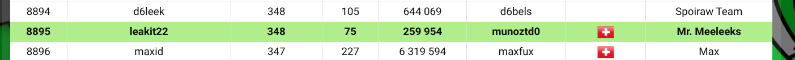

Gaming Reinforcement Learning with PyTorch (Super Mario Bros)

Here We used
OpenAI gym tools to build a Super Mario Bros environment, and trained a Proximal Policy Optimization (PPO) algorithm with actor/critic networks being convolutional
neural networks (CNNs) with
PyTorch to play the game with reduced actions. We also used
TensorBoard to visualize
and evaluate the quality metrics of the model.
 You can check the project Github.
You can check the project Github.
Multiplayer AI programming online game
 Leek Wars
Leek Wars is a multiplayer AI programming game in which you train leeks to fight each others. The language of Leek Wars is LeekScript, built in Java. Follow my leek
@leakit22 ! We remain in the top 100 for the time being.

You can check the AI on Github.
Conway's Game Of Life implemented in Python

The “game” is a zero-player game, meaning that its evolution is determined by its initial state, requiring no further input. One interacts with the Game of Life by creating an initial configuration and observing how it evolves, or, for advanced “players”,
by creating patterns with particular properties. How the game works Because the Game of Life is built on a grid of nine squares, every cell has eight neighboring cells,as shown in the given figure.
A given cell (i, j) in the simulation is accessed on a grid [i][j], where i and j are the row and column indices, respectively. The value of a given cell at a given instant of time depends on the state
of its neighbors at the previous time step.
Conway's Game of Life has four rules:
1) If a cell is ON and has fewer than two neighbors that are ON, it turns OFF.
2) If a cell is ON and has either two or three neighbors that are ON, it
remains ON.
3) If a cell is ON and has more than three neighbors that are ON, it turns OFF.
4) If a cell is OFF and has exactly three neighbors that are ON, it turns ON.
The bulk of the graphical implementation was made using
PyGame.
You can check the project on Github.